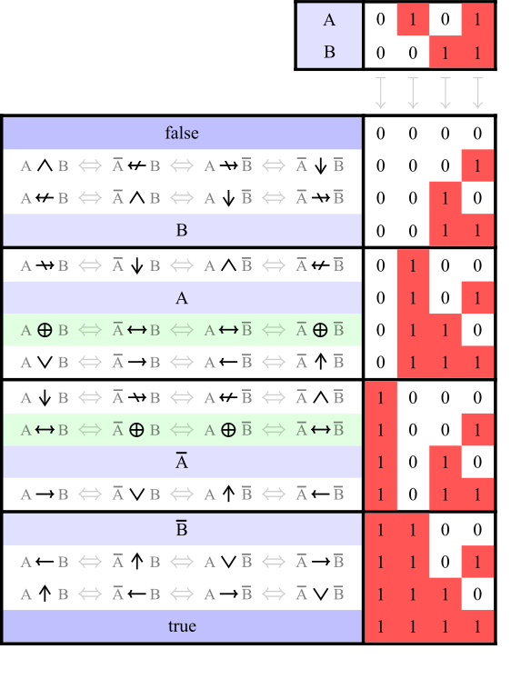

Boolean algebra
在数理逻辑中，布尔代数（boolean algebra）是代数的一个分支．初等代数中变量的值是数字，其研究的主要运算符有加法、乘法、乘方以及这三种运算的逆运算．而布尔代数中变量的值仅为 真 和 假 两种（通常记作 $1$ 和 $0$），其研究的主要运算符有合取（与，$\land$）、析取（或，$\lor$）、否定（非，$\lnot$）．就像初等代数是描述数字运算的一种形式一样，布尔代数是描述逻辑运算的一种形式．
布尔函数
???+ abstract "定义" 布尔函数（boolean function）指的是形如 $f:\mathbf{B}^k\to \mathbf{B}$ 的函数，其中 $\mathbf{B}={0,1}$ 为 布尔域（boolean domain），非负整数 $k$ 为该布尔函数的 元数（arity）．$k=1$ 的布尔函数为一元函数，以此类推．$k=0$ 时，我们认为函数退化为 $\mathbf{B}$ 中的常量．
我们一般只研究一元和二元的布尔函数．如无特殊说明，下文的布尔函数仅限于一元和二元的情况．
除了函数的一般表达方式外，我们还可以用 真值表（truth table）、逻辑门（logic gate）、Venn 图 来表示布尔函数．
???+ abstract "真值表" 对一个布尔函数，我们枚举其输入的所有情况，并将输入和对应的输出列成一张表，这个表就叫做真值表．
$n$ 元布尔函数也可以用含 $n$ 个变量的 命题公式（propositional formula）表示，命题公式 $p$ 与 $q$ 逻辑等价（logically equivalent）当且仅当其描述的是同一个布尔函数，记作 $p\iff q$．
以下是一些常见布尔函数，我们也会把这些布尔函数统称为 逻辑运算符（logical connective）或 逻辑算子（logical operator）：
| 名称（数理逻辑） | 其他名称 | 记号 |
|---|---|---|
| 恒真（truth、tautology） | $\top$ | |
| 恒假（falsity、contradiction） | $\bot$ | |
| 命题 | 自身 | $A$ |
| 否定（negation） | 非（NOT） | $\lnot A$ |
| 合取（conjunction） | 与（AND） | $A \land B$ |
| 析取（disjunction） | 或（OR） | $A \lor B$ |
| 非合取（non-conjunction） | 与非（NAND）、Sheffer 竖线 | $A \bar{\land} B$、$A\uparrow B$ |
| 非析取（non-disjunction） | 或非（NOR） | $A \bar{\lor} B$、$A\downarrow B$ |
| 异或（Exclusive-OR，XOR） | $A \oplus B$ | |
| 同或（Exclusive-NOR） | $A \odot B$ | |
| 实质蕴含（material implication）[^note1] | $A \to B$ | |
| 实质非蕴含（material nonimplication）[^note1] | $A \nrightarrow B$ | |
| 反蕴涵（converse implication）[^note1] | $A \gets B$ | |
| 非反蕴涵（converse nonimplication）[^note1] | $A \nleftarrow B$ | |
| 双条件（biconditional）、等价（equivalence）^note1 | $A \leftrightarrow B$ | |
| 非等价（non-equivalence）^note1 | $A \nleftrightarrow B$ |
对应的真值表（From Wikipedia）：
{kind=link}

对应的 Venn 图和 Hasse 图（以集合的包含关系 $\subseteq$ 为偏序，From Wikipedia）：
{kind=link}

由于 $n$ 元布尔函数的输入有 $2^n$ 种，所以 $n$ 元布尔函数有 $2\uparrow (2\uparrow n)$ 种，其中 $\uparrow$ 为 Knuth 箭头．
我们把逻辑算子的组合称为 逻辑表达式（logical expression）．
如果我们把 $\mathbf{B}$ 视作模 $2$ 的一个 剩余类，此时异或等价于模 $2$ 加法，与等价于模 $2$ 乘法，所以有时我们也用 $\mathbf{Z}_2$ 表示布尔域．
优先级
一元逻辑算子优先级高于二元逻辑算子，即 $\lnot$ 的优先级高于 $\land$、$\lor$、$\oplus$ 等的优先级．
二元逻辑算子之间的优先级有多种规定，有的资料认为 $\land$、$\lor$、$\oplus$ 的优先级比 $\to$、$\gets$、$\leftrightarrow$ 更高，而有的资料持相反观点．所以在使用时推荐多加括号来明确顺序．
C++ 中的规定参见 C++ 运算符优先级总表．
自足算子与完备算子集
实际上，我们只用与非或者或非即可表达其余的逻辑算子，CPU 也是基于这一点构建的．但是，由于 与、或、非、异或 这四种逻辑算子的性质更好，所以我们在研究布尔代数时一般只使用这四种函数．
??? example "如何分别用与非、或非表示其余的逻辑算子" 我们有
- $\lnot p=p\bar{\land} p=p\bar{\lor} p$，
- $p\land q=(p\bar{\land}q)\bar{\land}(p\bar{\land}q)=(p\bar{\lor}p)\bar{\lor}(q\bar{\lor}q)$，
- $p\lor q=(p\bar{\land}p)\bar{\land}(q\bar{\land}q)=(p\bar{\lor}q)\bar{\lor}(p\bar{\lor}q)$，
- $p\to q=p\bar{\land} (q\bar{\land} q)=((p\bar{\lor}p)\bar{\lor}q)\bar{\lor}((p\bar{\lor}p)\bar{\lor}q)$．
另外
- $p=\lnot\lnot p$，
- $p\nleftrightarrow q=p\oplus q=(p\lor q)\land\lnot (p\land q)$，
- $p\leftrightarrow q=p\odot q=\lnot(p\oplus q)$，
- $p\nrightarrow q=\lnot(p\to q)$，
- $p\gets q=q\to p$，
- $p\nleftarrow q=\lnot(p\gets q)$．
我们能不能用指定的若干逻辑算子描述所有的逻辑算子？这便引出了完备算子集的定义．
???+ abstract "定义" 对一个给定的逻辑算子集，如果能只用这个集合里的函数描述所有的逻辑算子，则称该集合为 完备算子集（functionally complete operator set）．特别地，如果只用一个逻辑算子即可描述所有的逻辑算子，则称该算子为 自足算子（sole sufficient operator）或 Sheffer 函数（Sheffer function）．
如果在一个完备算子集中删去任意一个元素，其都不能描述所有的逻辑算子，则称该集合为 **极小完备算子集**（minimal functionally complete operator set）．
可以证明逻辑算子中只有 $\bar{\land}$、$\bar{\lor}$ 是自足算子．
以下为常见的极小完备算子集[^vaughan1942complete]：
- ${\bar{\land}}$，${\bar{\lor}}$，
- ${\land,\lnot}$，${\lor,\lnot}$，${\gets,\lnot}$，${\to,\lnot}$，${\nleftarrow,\lnot}$，${\nrightarrow,\lnot}$，
- ${\gets,\bot}$，${\to,\bot}$，${\nleftarrow,\top}$，${\nrightarrow,\top}$，
- ${\gets,\nleftarrow}$，${\to,\nleftarrow}$，${\gets,\nrightarrow}$，${\to,\nrightarrow}$，
- ${\gets,\nleftrightarrow}$，${\to,\nleftrightarrow}$，${\nleftarrow,\leftrightarrow}$，${\nrightarrow,\leftrightarrow}$，
- ${\lor,\leftrightarrow,\bot}$，${\lor,\leftrightarrow,\nleftrightarrow}$，${\lor,\nleftrightarrow,\top}$，
- ${\land,\leftrightarrow,\bot}$，${\land,\leftrightarrow,\nleftrightarrow}$，${\land,\nleftrightarrow,\top}$．
性质
首先是代数结构的相关性质：
- 与、或均关于 $\mathbf{B}$ 构成 交换幺半群．即与运算和或运算均具有交换律、结合律和幺元（$x\land 1=x\lor 0=x$）．
- 异或、同或均关于 $\mathbf{B}$ 构成 群．即异或运算和同或运算均具有交换律、结合律、幺元（$x\oplus 0=x\odot 1=x$）和逆元（$x\oplus x=0$，$x\odot x=1$）．
- 与非、或非均不具有结合律，所以不构成半群．
对于 $\land$、$\lor$，我们有
- 分配律：
- $a\land(b\diamond c)=(a\land b)\diamond (a\land c)$，其中 $\diamond$ 可以为 $\land$、$\lor$、$\oplus$，
- $a\lor(b\diamond c)=(a\lor b)\diamond (a\lor c)$，其中 $\diamond$ 可以为 $\land$、$\lor$、$\odot$．
- 幂等（idempotence）律：$x\land x=x$、$x\lor x=x$．
- 单调性：$a\to b\iff(a\land c)\to(b\land c)$、$a\to b\iff(a\lor c)\to(b\lor c)$．
- 吸收（absorption）律：$x\land(x\lor y)=x\lor(x\land y)=x$．
- 与「$\to$」的关系：
- $a \lor b \iff (\lnot a \to b) \land (\lnot b \to a)$，
- $a \land b \iff \lnot((a \to \lnot b) \lor (b \to \lnot a))$．
???+ abstract "布尔函数的单调性" 对一个布尔函数 $f(x_1,\dots,x_n)$ 和 $\mathbf{B}^n$ 中的两个元素 $(a_1,\dots,a_n),(b_1,\dots,b_n)$，若当 $a_i\leq b_i,~~\forall i=1,\dots,n$ 时恒有 $f(a_1,\dots,a_n)\leq f(b_1,\dots,b_n)$，则称该布尔函数是单调的．
我们还有如下性质：
- 排中律（law of excluded middle）：$p\lor\lnot p$ 恒真．
- $\lnot p\iff p\to\bot$．
- 双重否定/$\lnot$ 的 对合（involution）律：$\lnot\lnot x=x$．
- $\oplus$、$\odot$ 的对合律：$x\oplus y\oplus y=x$、$x\odot y\odot y=x$．
- De Morgan 律：$\lnot(p\land q)=\lnot p\lor \lnot q$、$\lnot(p\lor q)=\lnot p\land \lnot q$．
逻辑表达式的标准化
根据上述性质，我们可以对逻辑表达式进行一定的等价变换，使其符合特定的范式，这一点可用于自动定理证明中．常见的标准化范式有 合取范式（conjunctive normal form，CNF）、析取范式（disjunctive normal form，DNF）和 代数范式（algebraic normal form，ANF）．
???+ abstract "合取范式与析取范式" 我们做如下递归式的定义：
1. **文字**（literal）：对变量 $x$，$x$ 和 $\lnot x$ 是文字．
2. 子式：
- 文字是子式，
- 若 $A$ 是文字、$B$ 是子式，则 $A\lor B$ 是子式．
3. 合取范式：
- 若 $A$ 是子式，则 $(A)$ 是合取范式，
- 若 $A$ 是子式、$B$ 是合取范式，则 $(A)\land B$ 是合取范式．
类似地，交换上面定义中的 $\land$ 与 $\lor$ 即可得到析取范式的定义．
例如以下逻辑表达式均为析取范式：
- $(A\land\lnot B)\lor(C\land D\land\lnot E)$，
- $(A\land B)\lor (C)$，
- $(A\land B)$，
- $(A)$．
以下逻辑表达式均为合取范式：
- $(\lnot A\lor\lnot B\lor C)\land(\lor D\lor\lnot E)$，
- $(A\lor B)\land (C)$，
- $(A\lor B)$，
- $(A)$．
以下逻辑表达式既不为合取范式也不为析取范式：
- $\lnot(A\land B)$，
- $A\land (B\lor (C\land D))$．
我们可以通过如下的步骤将任意一个只含有 $\lnot$、$\land$、$\lor$ 运算的逻辑表达式变形为 DNF：
$$ \begin{array}{rcccl} \lnot\lnot x &&\mapsto&& x,\ \lnot(x\lor y) &&\mapsto&& \lnot x\land \lnot y,\ \lnot(x\land y) &&\mapsto&& \lnot x\lor \lnot y,\ x\land(y\lor z) &&\mapsto&& (x\land y)\lor (x\land z),\ (x\lor y)\land z &&\mapsto&& (x\land z)\lor (y\land z). \end{array} $$
要得到表达式 $X$ 的 CNF，只需得到 $\lnot X$ 的 DNF 后取反并应用 De Morgan 律即可．
???+ abstract "代数范式" 首先，我们用如下递归式的定义来定义子式：
- 变量 $x$ 是子式，
- 若 $A$ 是子式，$x$ 是变量，则 $x\land A$ 是子式．
则满足如下三种形式之一的逻辑表达式为代数范式：
1. $1$、$0$，
2. 若干不等价子式的异或，如 $a\oplus b\oplus(a\land b)\oplus(a\land b\land c)$，
3. 若干不等价子式与唯一的 $1$ 的异或，如 $1\oplus a\oplus b\oplus(a\land b)\oplus(a\land b\land c)$．
注意到代数范式和 $\mathbf{Z}_2$ 上的多项式一一对应，所以代数范式也被称为 Zhegalkin 多项式（Zhegalkin polynomial）．
我们可以通过如下的步骤将任意一个只含有 $\lnot$、$\land$、$\lor$、$\oplus$ 运算的逻辑表达式变形为 ANF：
- $\oplus$：直接展开，如 $(1\oplus x)\oplus(1\oplus x\oplus y)=1\oplus x\oplus 1\oplus x\oplus y=y$，
- $\land$：用分配律展开，如 $x\land(1\oplus x\oplus y)=(x\land 1)\oplus (x\land x)\oplus (x\land y)=x\oplus (x\land y)$，
- $\lnot$：将 $\lnot x$ 用 $1\oplus x$ 代替，如 $\lnot(1\oplus x\oplus y)=1\oplus 1\oplus x\oplus y=x\oplus y$，
- $\lor$：将 $x\lor y$ 用 $1\oplus((1\oplus x)\land(1\oplus y))$ 或 $x\oplus y\oplus (x\land y)$ 代替，如 $(1\oplus x)\lor(1\oplus x\oplus y)=1\oplus((1\oplus 1\oplus x)\land(1\oplus 1\oplus x\oplus y))=1\oplus x\oplus(x\land y)$．
参考资料与注释
- Boolean algebra - Wikipedia
- Boolean function - Wikipedia
- Logical connective - Wikipedia
- Disjunctive normal form - Wikipedia
- Zhegalkin polynomial - Wikipedia
[^note1]: 用于命题推导时应使用双横长箭头，如 $A\implies B$、$A\impliedby B$、$A\iff B$ 等．
[^vaughan1942complete]: Vaughan, H. E. (1942). Complete sets of logical functions.Transactions of the American Mathematical Society 51: 117–32.